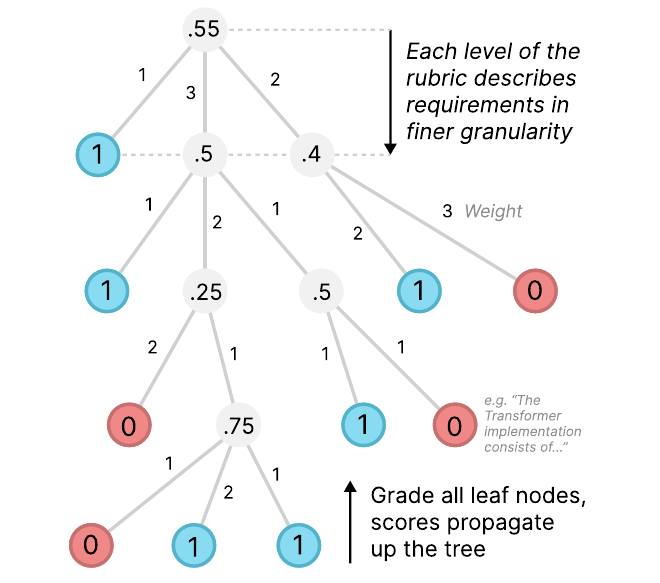
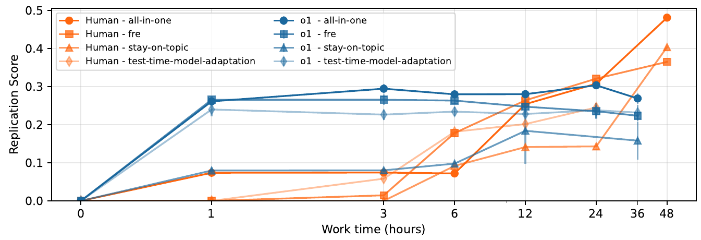

读懂方法、写出代码、跑出实验结果，是三个不同层次的能力。PaperBench 希望评估的，是 AI 能否把它们连接起来，完成一篇机器学习论文的复现。这篇论文最值得关注的有两点：它怎样评价复杂科研任务的完成程度，以及实验揭示了科研智能体在哪些环节容易停下来。
本文依据 2025 年 4 月 7 日的 arXiv v3。下文模型名称和成绩均指论文当时的实验设置。
一、课题解读：如何判断 AI 具备科研执行能力
假设我们把一篇机器学习论文交给 AI，让它独立复现。它需要先辨认论文的主要贡献，再补齐实现细节、准备数据、训练模型、排查错误，最后判断结果是否支持原论文的结论。
这些工作相互依赖。数据处理出错，后面的训练可能仍然正常运行；代码能够执行，实验设置却可能偏离论文；生成了一张结果表，也未必意味着表中的数字来自真实实验。
因此，科研智能体评测需要回答两个问题：
- 它完成了什么？ 要检查具体代码、执行记录和实验产物。
- 它能否持续推进？ 遇到问题以后，能否利用反馈修正方案，直至完成任务。
复现提供了一个较明确的研究场景：目标结果已经存在，我们可以检查 AI 是否具备独立抵达这些结果的能力。
二、相关文献解读：此前的评测覆盖到了哪里
下面三项工作，可以帮助我们理解这篇论文的位置。
| 工作 | 主要任务 | 与从论文独立复现的区别 |
|---|---|---|
| CORE-Bench | 利用提供的代码和数据，重现研究结果 | 重点检查已有研究代码的使用与执行 |
| MLE-bench | 完成 Kaggle 机器学习竞赛 | 重点检查数据处理、建模和实验优化 |
| RE-Bench | 完成开放式机器学习研究工程任务 | 重点检查特定研究工程问题的解决能力 |
PaperBench 把任务入口设为论文，要求从头建立代码库，并验证主要实验贡献。它因此需要处理一个额外困难：一篇论文包含多个相互关联的目标，很难用一个预测准确率概括完成情况。 原论文相关工作
三、研究问题解读：论文需要解决什么
我们可以把论文的核心问题归纳为三个；这是本文的阅读整理，并非作者逐字列出的研究问题。
- 怎样定义“复现完成了多少”？ 全部成功或全部失败的判断过于粗糙，需要识别中间进展。
- 怎样区分实现、执行与结果复现？ 代码看起来合理，只能说明完成了部分工作，还需要运行证据。
- 怎样可靠地批量评分，并找到能力瓶颈？ 专家逐项检查成本很高；采用自动评分，又需要验证评分器本身。
这是一篇评测方法论文。它的主要贡献是构建任务、评分标准和验证流程；被测 Agent 的实现主要用于提供初始基线。
四、方法解读：沿着评测流程看设计
第一步：给出论文，要求提交完整复现代码
任务输入包括论文与补充说明。Agent 可以浏览网络、安装依赖和执行实验，但不能查看或使用该论文作者的原始代码库，以及被列入黑名单的其他复现资源。
最终提交必须包含 reproduce.sh，作为运行复现实验的统一入口。
这里有一个重要安排：Agent 看不到详细评分标准，需要自己从论文判断哪些贡献值得复现。 补充说明则用于澄清论文中缺失或含糊的细节。
第二步：把“复现论文”拆成可检查的要求
作者与原论文作者合作，将主要贡献逐层拆解，形成评分树。

例如，一项贡献可以继续拆为：实现某个模型、完成指定训练、执行相应评估、得到支持结论的结果。
20 篇论文共包含 8,316 个叶子评分项。权重反映各项贡献的相对重要性，而非实现难度。Replication Score 因此衡量的是满足要求的加权程度，主指标再对各篇论文的得分取平均。
21.0% 的复现得分，不等于完整复现了 21% 的论文。
第三步：在新环境中重新执行
提交后，评测系统把代码复制到新的运行环境，执行 reproduce.sh，收集日志与输出文件。这样能够检查提交物能否独立产生结果，减少对 Agent 自述和开发期间遗留文件的依赖。
评分要求进一步分成三类：
| 类型 | 检查的问题 |
|---|---|
| Code Development（代码开发） | 是否实现了相应功能？ |
| Execution（执行） | 所要求的实验是否实际执行？ |
| Result Match（结果匹配） | 执行产物是否支持论文中的相应结果？ |
这个区分允许系统给予部分分数，同时保留实现与实证之间的差别。缺少 reproduce.sh 的提交，所有执行和结果匹配项均记为零分。
独立执行能够增加证据可信度，但还需要检查脚本、日志和输出之间是否一致，不能仅凭“重新运行过”就认定所有结果真实有效。
第四步：用自动评分器逐项检查
SimpleJudge 为每个叶子要求检索相关提交文件，再判断是否满足要求。作者另外构建 JudgeEval，用专家标注检查自动评分质量。
我们认为，这是方法中很重要的一层：科研能力的评价依赖评分器，评分器也需要接受独立检验。 方法与评分细节
五、实验设计与结果
主实验：完整复现任务上的表现如何
数据集包含 20 篇 ICML 2024 Spotlight 或 Oral 论文，覆盖 12 个主题。主实验使用 BasicAgent，提供命令执行、Python、浏览器等工具，以及单张 A10 GPU；每种模型在每篇论文上运行三次，Agent 最长运行 12 小时。提交后的独立复现阶段另设 12 小时上限。
主要指标是各论文的平均加权复现得分，越高越好。
| 模型 + BasicAgent | 平均复现得分 |
|---|---|
| Claude 3.5 Sonnet（New） | 21.0 ± 0.8% |
| o1-high | 13.2 ± 0.3% |
| DeepSeek-R1 | 6.0 ± 0.3% |
| GPT-4o | 4.1 ± 0.1% |
| Gemini 2.0 Flash | 3.2 ± 0.2% |
| o3-mini-high | 2.6 ± 0.2% |
数据来源：原论文 Table 4；± 为均值标准误，不是置信区间，也不是跨论文难度差异的范围。上述结果属于论文中的特定模型版本与运行设置。
这说明被测系统能够完成部分复现工作，但距离完整复现还有明显差距。作者对部分轨迹的检查发现，多数模型容易提前结束任务：有时声称已经完成，有时遇到困难便停止。
我们的理解是：生成一份计划，与根据实验反馈持续执行计划，仍然存在距离。 主实验
分项结果：主要停在什么地方
原论文 Table 9 把得分按要求类型拆开。其中：
| 系统 | 代码开发 | 执行 | 结果匹配 |
|---|---|---|---|
| Claude 3.5 Sonnet + BasicAgent | 35.4% | 1.8% | 0.7% |
| o1 + IterativeAgent | 43.3% | 4.5% | 0.0% |
数据来源：原论文 Table 9 的均值。该表最后一列标为 Results Analysis，正文讨论的是 Result Match 要求。Claude 结果基于三次运行；该表 o1 + IterativeAgent 行的标准误基于两次运行，与主结果的统计范围有区别。
这组结果比总分更能揭示问题：相当一部分进展停留在实现层面，尚未转化为完成实验与复现结果。
这些类别得分有各自的统计范围，不能简单相加。结果匹配项得分低，也不等于所有代码都没有价值。附录 Table 9
运行方式：持续迭代是否有帮助
作者设计了 IterativeAgent：移除主动提前提交的工具，并提示模型每次推进下一步。
| 模型 | BasicAgent | IterativeAgent |
|---|---|---|
| o3-mini-high | 2.6% | 8.5% |
| o1-high | 13.2% | 24.4% |
| Claude 3.5 Sonnet | 21.0% | 16.1% |
数据来源：原论文 Tables 4–5 的均值。
o1 和 o3-mini 上升，Claude 下降，排序也随之改变。这个结果提示我们：评测反映的是模型与 Agent 运行方式共同形成的能力。
这里还有一个资料差异：论文主实验说明为 12 小时，而官方仓库 README 把 o1 的 24.4% 标成 24 小时。因此，不能把该行变化直接解释成严格等预算下的纯提示收益。IterativeAgent 还同时改变了退出机制和提示方式，二者的独立贡献也没有被这组对比分离。
人类对照：更多时间能否带来持续进展

图中，o1 早期得分快速上升，随后多数曲线趋于平缓；人类早期较慢，后续仍能获得明显进展。
在有完整后期记录的三篇子集上，人类 best-of-3 在 48 小时达到 41.4%，o1 在 36 小时的平均得分为 26.6%。第四篇的人类记录在 24 小时结束，因此没有纳入这组三篇汇总。
这个比较需要保留条件：论文子集很小，人类采用 best-of-3、允许使用 AI 助手，而且双方时间预算不同。部分人类尝试使用 A100，所有提交的独立复现仍使用 A10。它更有力地支持的是：该设置下，AI 的早期产出优势尚未转化成同样强的持续改进能力。 人类对照实验
自动评分：分数本身可靠吗
SimpleJudge 使用 o3-mini-high 时，在 JudgeEval 上的跨论文宏平均 F1 为 0.83。JudgeEval 使用来自五篇论文的部分复现产物，以专家标注的叶子评分作为参考。F1 衡量评分器与专家标签的一致性，不能理解为复现成功率。
因此，总分适合提供能力信号；对于重要结论，仍应结合执行产物和人工检查。论文也明确指出，自动评分存在误差，且评分结果并非完全确定。JudgeEval
论文另提供只检查代码开发的 PaperBench Code-Dev，o1 得分为 43.4%。它跳过独立复现与其他要求类型，不能与完整评测的 21.0% 或 24.4% 直接比较。
六、我们自己的思考
课题思考：这个领域在研究什么
科研智能体评测需要逐渐走向“证据能否被重新产生”：系统是否理解目标、实现方法、组织实验，并根据结果继续推进。
我们认为，复现是一个有价值的观察窗口。它把研究目标固定下来，让我们更容易识别执行能力的缺口。但完成复现与开展原创研究之间，还有选题、提出假设及判断研究价值等能力需要评价。
局限问题思考：目前还存在哪些问题
第一，总分可能掩盖实际瓶颈。 同样的分数，可能来自大量代码实现，也可能来自少量真正完成的实验；二者对科研的实际价值不同。
第二，持续工作尚未等同于持续学习。 延长时间、阻止提前退出，可以增加行动数量，但仍需判断系统是否利用错误信息改变了做法。
第三，评测本身昂贵且覆盖有限。 8,316 个评分项来自 20 篇论文，它们不是同样数量的独立研究场景。评分标准还需要专家投入，并受论文表述、评分器判断和潜在训练污染影响。
解决方案思考：这些问题有哪些解决方向
下面是我们认为值得验证的方向，分别对应上述问题。
- 同时报告进度与实证完成度。 保留代码、执行和结果匹配分项，另外统计完整完成了多少个核心实验，避免一个总分承担过多解释。
- 围绕失败反馈设计持续迭代。 保存“失败原因—修正措施—重新运行结果”，在相同预算下比较系统是否减少重复错误、推进尚未完成的实验。
- 扩大独立任务，并加强证据检查。 引入更新、未公开的论文任务；优先用程序检查执行事实，把专家审查集中在关键结论与争议评分上，同时单独评测原创研究能力。
对我们建设科研智能体最直接的启发是：每推进一步，都应留下足以让下一步判断成立的证据。 PaperBench 的分项结果，恰好说明这条链条在被测系统中最容易在“实现之后、实证之前”中断。
本文基于 PaperBench arXiv v3。插图来源：Giulio Starace 等，原论文 Figures 1–3，按 CC BY 4.0 许可引用；仅裁去页面外围内容。表格按原论文核心结果摘录，解释与后续实验设想为本文分析。